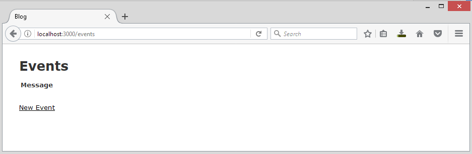
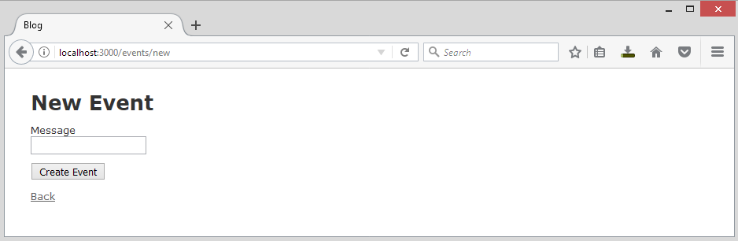
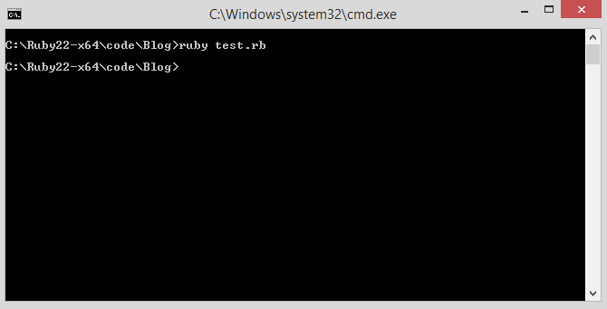
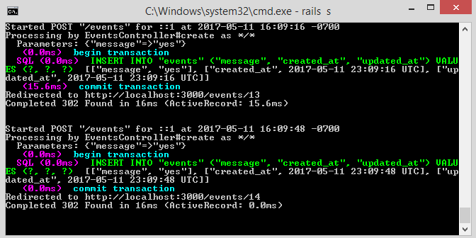
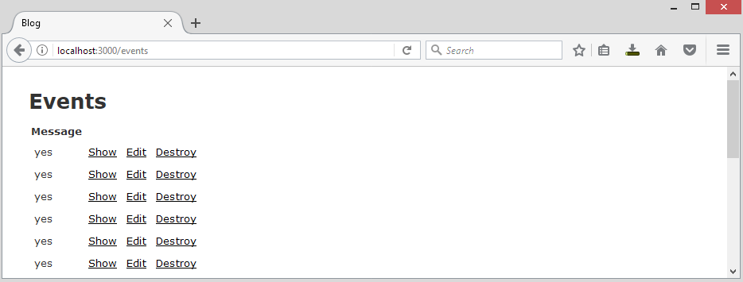
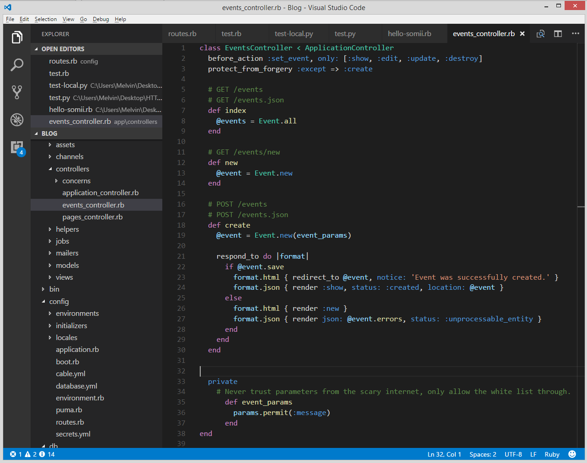

Last modified: Thu Aug 16 2018 22:49:02 GMT+0800 (Malay Peninsula Standard Time)
Chapter 1. RESTful JSON API
This Chapter is written for people who are familiar with Web Development and has minimal networking knowledge, if you are unfamiliar with any of these, please skip this chapter. The purpose of RESTful API is to allow third party integration. By default, we choose to generate a Rails Application with Model, View, and Controller. However, you can generate a Rails Application with just View and Controller for API purpose. You may want to read more about Ruby on Rails API in order to understand the this chapter.
Assume that you are in a Hackathon or a Rapid Prototyping challenge, you can choose to use a microcontroller (Raspberry Pi or Intel Edison) to interact with your Ruby on Rails application. An example of the application would be reading from a sensor and send the sensor value via HTTP to Ruby on Rails server.
Do notice that example that I shown below is not the best example. It may has security exploit depending on how you implement it.
1.1 Initial Setup
Assume that this application is created for a Hackathon or Rapid Prototyping Challenge, the fastest way to generate a Rails Application with MVC instead of API. To create a Rails application and use the scaffold command to create the major piece of MVC.
rails new Blog
rails generate scaffold Event message:string
Then, migrate the database by using the command below.
rake db:migrate
Figure 1.1.1 shows the index page of Message with one field, named text and Figure 1.1.2 shows the new message page.

Figure 1.1.1: Index of Event

Figure 1.1.2: New Event
1.2 Controller Setup
In order for our Rails application to receive external request, we have to turn off the request forgery protection. To achieve that, follow the instruction in Table 1.2.1 and Table 1.2.2. Do note that after the code in Table 1.2.1 is added to your controller, you will not able to create any new Event from localhost:3000/events/new.
Table 1.2.1: Code to add to Event controller
#MyApp/app/controllers/events_controller.rb
protect_from_forgery :except => :create
Table 1.2.2: Code to modify in Event controller
#MyApp/app/controllers/events_controller.rb
#Code to remove
def event_params
params.require(:event).permit(:message)
end
#Code to add
def event_params
params.permit(:message)
end
1.3 HTTP POST Script
To send a HTTP POST request from your machine or microcontroller, you will have to use a script. A sample Ruby and Python scripts with http://localhost:3000/events as the endpoint and message as the parameter are shown below. For your convenience, you should save the HTTP POST Script at the root directory of your Ruby on Rails Web Application.
Ruby HTTP POST Script, YOUR_FILE_NAME.rb:
require 'net/http'
require 'uri'
url = 'http://localhost:3000/events'
uri = URI.parse(url)
params = {'message' => 'yes'}
Net::HTTP.post_form(uri, params)
As a side note, Python2 and Python3 codes are not interchangeable. In order to run the Python script, you are required to install the libraries.
Python3 HTTP POST Script, YOUR_FILE_NAME.py:
import urllib3
import requests
import json
encoded_body = json.dumps({
"message": "yes"
})
http = urllib3.PoolManager()
response = http.request("POST", "localhost:3000/events",
headers={'Content-Type': 'application/json'},
body=encoded_body)
Python2 HTTP POST Script, YOUR_FILE_NAME.py:
import urllib
import requests
status = {
"message": yes
}
response = requests.post("http://localhost:3000/events", json=status)
1.4 Run the Script
Run the script and send the data in the script to your Ruby on Rails, use the command below to run Python and Ruby script. Both the commands below assume that your script is stored at the root directory of your Web Application. Figure 1.4.1 shows a Ruby script is ran and by investigate our Rails server logs as shown in Figure 1.4.2, we can see that our data is successfully inserted into the database.
For Python scripts:
ruby YOUR_FILE_NAME.rb
For Ruby scripts:
python YOUR_FILE_NAME.py

Figure 1.4.1: Ruby script successfully ran

Figure 1.4.2: Logs of Rails server
You can also view the result by visiting the Events index page. Figure 1.4.3 shows the result of the Events index page.
Figure 1.4.3: index of Events page
1.5 Clean Up
Since we are just using the controller for RESTful API request, we can technically get rid of most of parts in the controller. Figure 1.5.1 shows the minimal code required for HTTP POST. If you are trying to use HTTP GET, PUT, PATCH, and DELETE, you have to add the required code and change your script.

Figure 1.5.1: Events controller